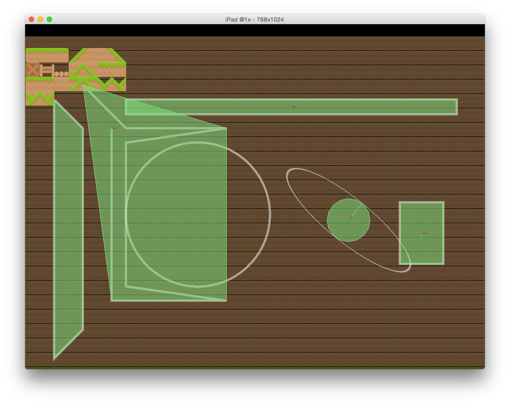
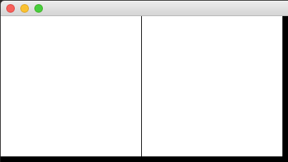
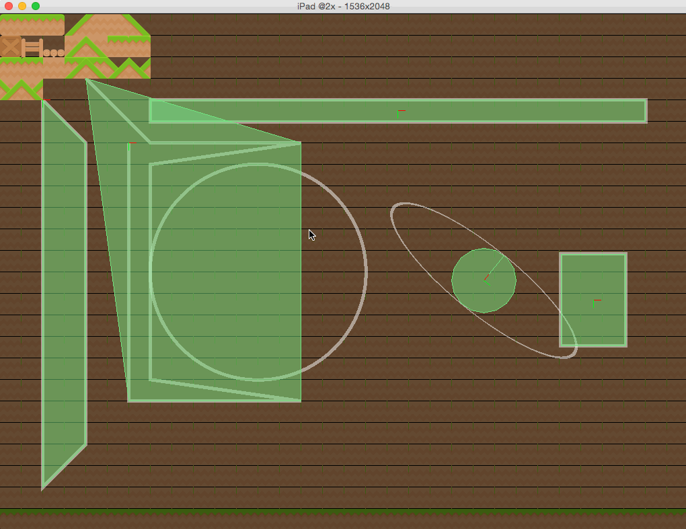

Does this look familiar to you?
{kind=link}
That's a screenshot of public enemy number one: the Evil Flickering Tile Lines of Doom. When Dusk (or other tile map libraries for Corona) loads a tile map, sometimes while moving it around, these flickering tile lines appear. There are steps that can be taken to reduce them (margin and spacing, nearest texture filter, tileset extrusion), but so far, no answer to them has been found.
Until now. I may have discovered the cause and the answer. Which is really exciting.
The Hypothesis
While playing around with Dusk the other day, I found that it seemed the lower I set the map's tracking level, the more the flickering tile lines appeared, and vice versa. I said to myself, "Self, that's interesting." Then I started thinking. Could something about the tracking level be making the tiles flicker? Not possible. MTE seems to have the same problem (I asked MTE's creator), and, as far as I know, MTE doesn't support tracking fluidity ratios. Oh well. There goes that idea. But the thought kept coming, until it hit me: Maybe tile flickering is caused by fractional pixels! Graphics engines can't deal with fractional pixels, so, perhaps, when the X/Y value of a display object is rounded off when it's fractional, if the object directly next to it is perfectly aligned to it, it's displayed as one pixel to the side. If this was true, it would make perfect sense - the lower the traking level, the more times the position is divided, so the more granular the pixel values will be. Thus, the lower the tracking level, the more the flickering tile lines would appear.
The Test
To test out my hypothesis, I created the simplest test I could think of. I made two white rectangles, both the same size, and positioned them perfectly next to each other. Then, I moved one of them over by a number as small as 0.3 pixels. The result?
{kind=link}
See the gap? I was on the right track. Evidently, direct positioning by less than a pixel for two objects did cause gaps. I was talking about display groups, though. I found that in my code, the displacement had to be over about 0.26 pixels for the gap to appear. Could a fractional pixel in a display group result in enough pixel problems to give a flicker?
I went back to my two rectangles. This time, I inserted them into a display group and moved the display group by a sub-pixel amount each frame. The result? I was able to make the extra displacement (0.26 in the original test) almost 1,000 times smaller and still see the flicker.
The Finale
Having made my observation and tested it, I was ready to see if I could fix the issue in my code. I placed a simple rounding of the camera's position in the code, and since then the Flickering Tile Lines of Doom haven't made another appearance. So is this issue fixed once and for all? Perhaps. I hope so. But whether it is or not, I've finally found at least one cause of it - fractional pixels.
The camera rounding code is still labeled as "experimental", because I'm not sure if it actually completely banishes the problem or not. You can try it out by setting the preference before loading your map:
dusk.setPreference("experimental:roundCameraPosition", true)When the simulator is small, camera position rounding seems to make the problem worse. Don't worry, though; when you scale the screen up, it completely disappears as far as I can see.
To finish up, check this out (a GIF is worth 1,000,000 words!):
{kind=link}